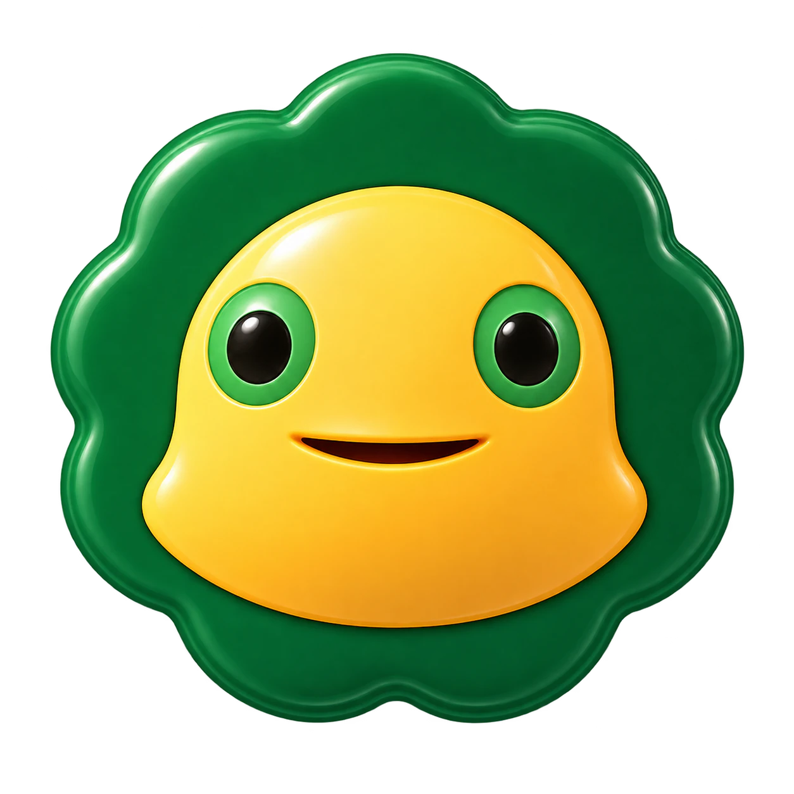
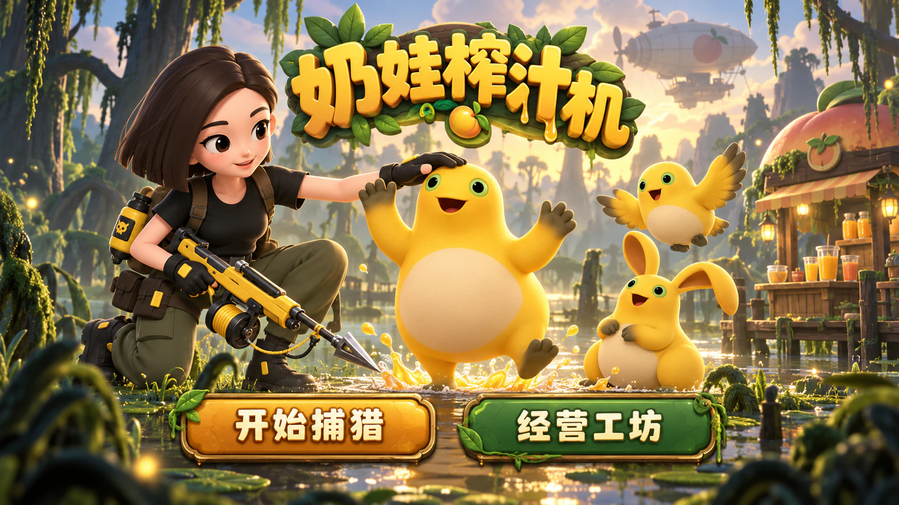
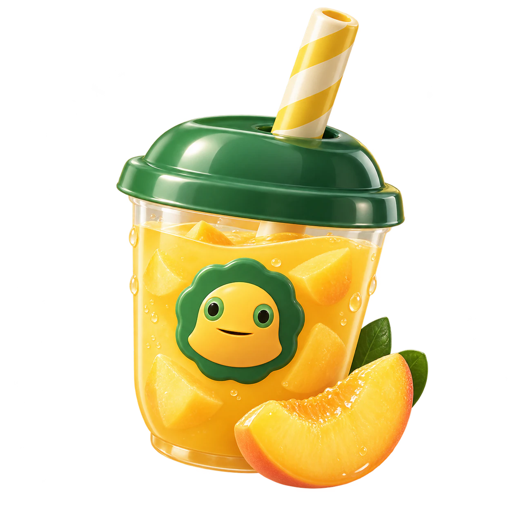
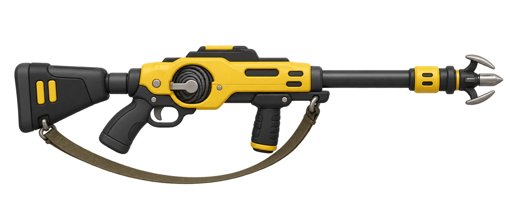

歇一会儿，冒险马上继续
8 只小家伙已回收，带回加工站。

先去捕猎，把回收的角色送进库存。
长枪身 · 双手持握 · 缆绳回收

每关目标数量固定。接近出口时会减速大笑并继续移动，随后跳入藏身处；逃走后本关不再出现。
每种产品使用对应角色；生产完成后自动送往店铺。
每种角色对应一种产品。选择设备配方后装料生产。
记录和进度保存在当前浏览器，最多保留最近 100 局；换设备或清除网站数据后无法恢复。